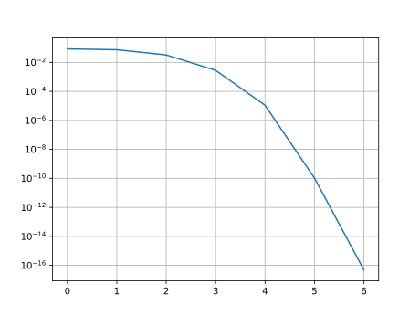

Tutorial: Implementing your own method
Although we try to provide state-of-the-art algorithms in NEP-PACK, you may want to implement a solver which is not available in NEP-PACK. By using the NEP-PACK data types and structures you can make your life easier in several ways. You do not need to know the internals of NEP-PACK. Correct usage, will give you access to many applications, helper functionality to combine with, and you will have to possibility to compare your method with other solvers. We now illustrate how to implement your own solver.
Halley's method
Halley's method for root-finding of nonlinear scalar equations has fast local convergence - even faster than Newton's method in terms of iterations. A NEP can be formulated as a root-finding problem since a solution will always satisfy
The application of Halley's method to this nonlinear scalar equation will serve as an example solver, although it does, to our knowledge, not lead to a competitive algorithm. Halley's method for the root-finding problem is defined as the
Although there are formulas for the derivatives of the determinant, we will here for simplicity just use finite difference to estimate the derivatives, i.e.,
Implementation in NEP-PACK (preliminary version)
Let us first define our solver function and introduce the function of which we wish to find the roots. The matrix $M(λ)$ is obtained from the compute_Mder-function.
using NonlinearEigenproblems
function halley(nep::NEP;λ=0.0,δ=sqrt(eps()),maxit=100,tol=eps()*100)
f=s-> det(compute_Mder(nep,s)); # The objective function
# More code here
endThe main loop (which should go in # More code here) can be implemented, in a way that does not involve many function evaluations, as follows:
for i=1:maxit
fλ=f(λ)
fλp=f(λ+δ)
fλm=f(λ-δ)
fp=(fλp-fλm)/(2δ)
fpp=(fλp-2*fλ+fλm)/(δ^2)
Δλ=2*fλ*fp/(2*fp^2-fλ*fpp);
λ=λ-Δλ;
@show (i,λ)
if (abs(Δλ)<tol)
return λ
end
endLet's test our code on a benchmark problem:
julia> nep=nep_gallery("dep0");
julia> λ=halley(nep)
(i, λ) = (1, -0.08425238005323712)
(i, λ) = (2, -0.14769529096609657)
(i, λ) = (3, -0.443164132772242)
(i, λ) = (4, -0.3653012970379835)
(i, λ) = (5, -0.35874460050208345)
(i, λ) = (6, -0.3587189462161427)
(i, λ) = (7, -0.35871894596862675)
(i, λ) = (8, -0.3587189459686267)Clearly, the algorithm terminates after 8 iterations. We can verify that this is actually a solution easily if we also have an approximate eigenvector. An eigenvector can be computed by essentially one step of inverse iteration, on the matrix $M(λ)$:
julia> x=normalize(compute_Mder(nep,λ)\ones(size(nep,1)))
5-element Array{Float64,1}:
-0.3170546135678643
0.15957983055370098
-0.30996780934165974
0.5577415634513512
0.6832678503094953The residual norm $|M(λ)x|$ does indeed become almost zero so it seems we have a solution:
julia> norm(compute_Mlincomb(nep,λ,x))
6.735017818475343e-16Implementation in NEP-PACK (full version)
In the following we illustrate a more advanced usage of the NEP-PACK method development: NEP-PACKs logging facility and error estimation. See Logger and Errmeasure. This gives access to other ways to measure error as well as a logging which is the same for all solvers and simplifies comparisons.
using NonlinearEigenproblems, LinearAlgebra, Plots
function halley(nep::NEP;λ=0.0,δ=sqrt(eps()),maxit=100,
tol=eps()*100,logger=0,
errmeasure = DefaultErrmeasure(nep))
# Setup the logger.
@parse_logger_param!(logger);
n=size(nep,1);
f=s-> det(compute_Mder(nep,s)); # The objective function
for i=1:maxit
fλ=f(λ)
fλp=f(λ+δ)
fλm=f(λ-δ)
fp=(fλp-fλm)/(2δ)
fpp=(fλp-2*fλ+fλm)/(δ^2)
Δλ=2*fλ*fp/(2*fp^2-fλ*fpp);
λ=λ-Δλ;
# Compute an eigenvector. This will not work if the
# eigenvector is orthogonal to ones(n)
x=normalize(compute_Mder(nep,λ)\ones(n));
err=estimate_error(ermdata,λ,x) # Estimate the error
push_iteration_info!(logger,i; λ=λ,err=err) # Put it into the log
if (err<tol)
return (λ,x)
end
end
endWe can now run our new method using with a logger=1 keyword argument so we get the standardized output of iteration info:
julia> (λ,x)=halley(nep,logger=1);
iter 1 err:0.08492602120772309 λ=-0.08425238005323712
iter 2 err:0.07450867012944977 λ=-0.14769529096609657
iter 3 err:0.032639292900081246 λ=-0.443164132772242
iter 4 err:0.00281602165251169 λ=-0.3653012970379835
iter 5 err:1.1025990567599428e-5 λ=-0.35874460050208345
iter 6 err:1.0638098128402615e-10 λ=-0.3587189462161427
iter 7 err:4.942402279980973e-17 λ=-0.35871894596862675
julia> norm(compute_Mlincomb(nep,λ,x))
5.613646650354486e-16If you now want to plot the error history, you can use the ErrorLogger:
julia> mylogger=ErrorLogger()
julia> (λ,x)=halley(nep,logger=mylogger);
julia> plot(mylogger.errs[1:10,1],yaxis=:log)We clearly observe the superlinear convergence:
